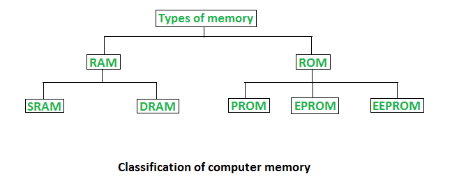
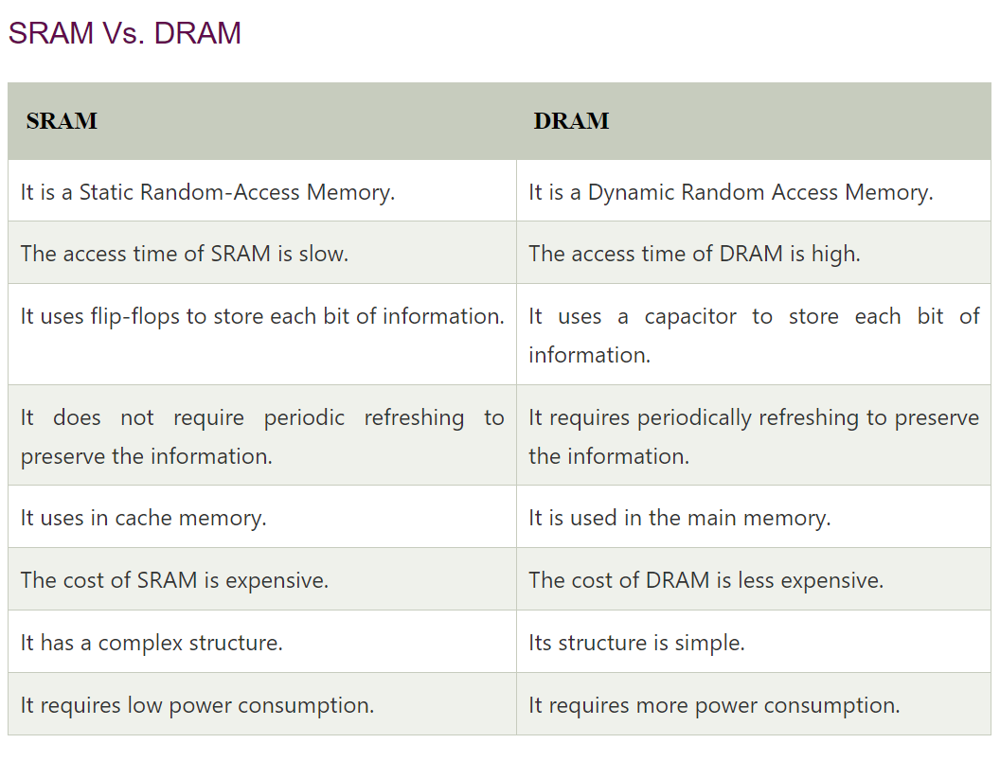
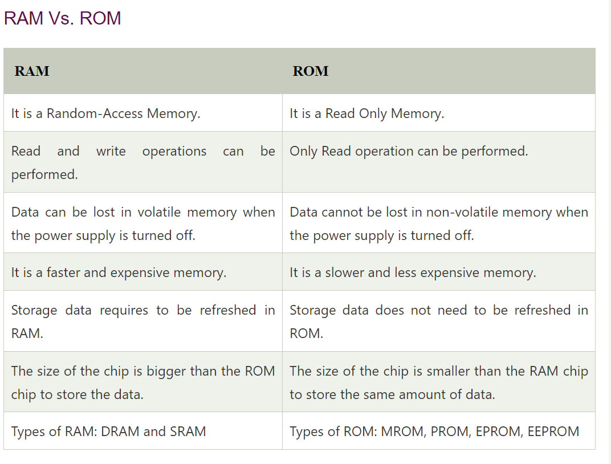

PRIMARY MEMORY
Primary Memory Example
Primary Memory examples are RAM, ROM, cache, PROM, EPROM, registers, etc.
Classification of Primary Memory

Primary memory can be broadly classified into two parts:
- Read-Only Memory (ROM)
- Random Access Memory (RAM)
Read-Only Memory
Any data which need not be altered are stored in ROM. ROM includes those programs which run on booting of the system (known as a bootstrap program that initializes OS) along with data like algorithm required by OS. Anything stored in ROM cannot be altered or changed.
Types of ROM:
- MROM: Masked ROM is hardwired and pre-programmed ROM. Any content that is once written cannot be altered anyhow.
- PROM: Programmable ROM can be modified once by the user. The user buys a blank PROM and writes the desired content but once written content cannot be altered.
- EPROM: Erasable and Programmable ROM Content can be changed by erasing the initial content which can be done by exposing EPROM to UV radiation. This exposure to ultra-violet light dissipates the charge on ROM and content can be rewritten on it.
- EEPROM: Electrically Erasable and Programmable ROM Content can be changed by erasing the initial content which could be easily erased electrically. However, one byte can be erased at a time instead of deleting in one go. Hence, reprogramming of EEPROM is a slow process.
Random Access Memory
Any process in the system which needs to be executed is loaded in RAM which is processed by the CPU as per Instructions in the program. Like if we click on applications like Browser, firstly browser code will be loaded by the Operating system into the RAM after which the CPU will execute and open up the Browser.
Types of RAM:
- DRAM: Dynamic RAM or DRAM needs to periodically refresh in a few milliseconds to retain data. DRAM is made up of capacitors and transistors and electric charge leaks from capacitors and DRAM needs to be charged periodically. DRAM is widely used in home PCs and servers as it is cheaper than SRAM.
- SRAM: Static RAM or SRAM keeps the data as long as power is supplied to the system. SRAM uses Sequential circuits like a flip-flop to store a bit and hence need not be periodically refreshed. SRAM is expensive and hence only used where speed is the utmost priority.

